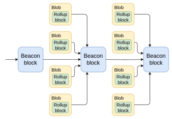
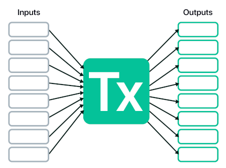
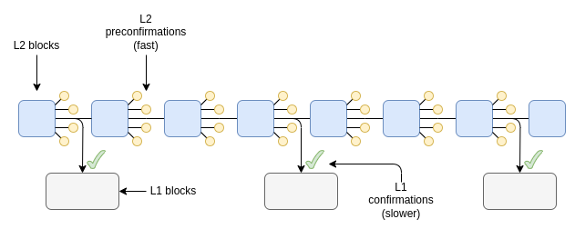
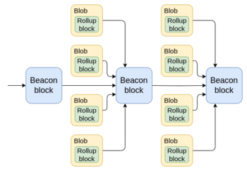
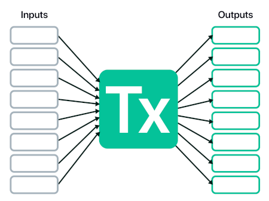
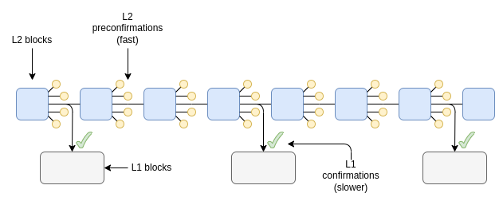

How do layer 2s really differ from execution sharding?
2024 May 23
See all posts
How do layer 2s really differ from execution sharding?
One of the points that I made in my post two and half years ago on "the Endgame"
is that the different future development paths for a blockchain, at
least technologically, look surprisingly similar. In both cases, you
have a very large number of transactions onchain, and processing them
requires (i) a large amount of computation, and (ii) a large amount of
data bandwidth. Regular Ethereum nodes, such as the 2 TB reth archive node running
on the laptop I'm using to write this article, are not powerful enough
to verify such a huge amount of data and computation directly, even with
heroic software engineering work and Verkle trees. Instead, in both "L1
sharding" and a rollup-centric
world, ZK-SNARKs
are used to verify computation, and DAS
to verify data availability. The DAS in both cases is the same. The
ZK-SNARKs in both cases are the same tech, except in one case they are
smart contract code and in the other case they are an enshrined feature
of the protocol. In a very real technical sense, Ethereum is
doing sharding, and rollups are shards.
|

|

|

This raises a natural question: what is the difference
between these two worlds? One answer is that the consequences of code
bugs are different: in a rollup world, coins get lost, and in a shard
chain world, you have consensus failures. But I expect that as protocol
solidify, and as formal verification technology improves, the importance
of bugs will decrease. So what are the differences between the
two visions that we can expect will stick into the long term?
Diversity of execution
environments
One of the ideas that we briefly played around with in Ethereum in
2019 was execution
environments. Essentially, Ethereum would have different
"zones" that could have different rules for how accounts work (including
totally different approaches like UTXOs), how the virtual machine works,
and other features. This would enable a diversity of approaches in parts
of the stack where it would be difficult to achieve if Ethereum were to
try to do everything by itself.
In the end, we ended up abandoning some of the more ambitious plans,
and simply kept the EVM. However, Ethereum L2s (including rollups,
valdiums and Plasmas) arguably ended up serving the role of execution
environments. Today, we generally focus on EVM-equivalent L2s, but this
ignores the diversity of many alternative approaches:
- Arbitrum
Stylus, which adds a second virtual machine based on WASM alongside the EVM.
- Fuel,
which uses a Bitcoin-like (but more feature-complete) UTXO-based
architecture.
- Aztec, which introduces a new
language and programming paradigm designed around ZK-SNARK-based
privacy-preserving smart contracts.

UTXO-based architecture. Source: Fuel
documentation.
We could try to make the EVM into a super-VM that covers all
possible paradigms, but that would have led to much less effective
implementations of each of these concepts than allowing platforms like
these to specialize.
Security tradeoffs: scale
and speed
Ethereum L1 provides a really strong security guarantee. If some
piece of data is inside a block that is finalized on L1, the entire
consensus (including, in extreme situations, social consensus) works to
ensure that the data will not be edited in a way that goes against the
rules of the application that put that data there, that any execution
triggered by the data will not be reverted, and that the data will
remain accessible. To achieve these guarantees, Ethereum L1 is willing
to accept high costs. At the time of this writing, the transaction fees
are relatively low: layer
2s charge less than a cent per transaction, and even the L1 is under
$1 for a basic ETH transfer. These costs may remain low in the future if
technology improves fast enough that available block space grows to keep
up with demand - but they may not. And even $0.01 per transaction is too
high for many non-financial applications, eg. social media or
gaming.
But social media and gaming do not require the same security model as
L1. It's ok if someone can pay a million dollars to revert a record of
them losing a chess game, or make one of your twitter posts look like it
was published three days after it actually was. And so these
applications should not have to pay for the same security costs. An
L2-centric approach enables this, by supporting a spectrum of data
availability approaches from rollups
to plasma
to validiums.

Different L2 types for different use cases. Read more here.
Another security tradeoff arises around the issue of passing
assets from L2 to L2. In the limit (5-10 years into the
future), I expect that all rollups will be ZK rollups, and
hyper-efficient proof systems like Binius and Circle STARKs with lookups, plus proof aggregation
layers, will make it possible for L2s to provide finalized state
roots in each slot. For now, however, we have a complicated mix of
optimistic rollups and ZK rollups with various proof time windows. If we
had implemented execution sharding in 2021, the security model to keep
shards honest would have been optimistic rollups, not ZK - and so L1
would have had to manage the systemically-complex
fraud proof logic on-chain and have a week-long withdrawal period for
moving assets from shard to shard. But like code bugs, I think this
issue is ultimately temporary.
A third, and once again more lasting, dimension of security tradeoff
is transaction speed. Ethereum has blocks every 12
seconds, and is unwilling to go much faster because that would overly
centralize the network. Many L2s, however, are exploring block times of
a few hundred milliseconds. 12 seconds is already not that bad: on
average, a user who submits a transaction needs to wait ~6-7 seconds to
get included into a block (not just 6 because of the possibility that
the next block will not include them). This is comparable to what I have
to wait when making a payment on my credit card. But many applications
demand much higher speed, and L2s provide it.
To provide this higher speed, L2s rely on
preconfirmation mechanisms: the L2's own validators
digitally sign a promise to include the transaction at a particular
time, and if the transaction does not get included, they can be
penalized. A mechanism called StakeSure generalizes this
further.

L2 preconfirmations.
Now, we could try to do all of this on layer 1. Layer 1
could incorporate a "fast pre-confirmation" and "slow final
confirmation" system. It could incorporate different shards with
different levels of security. However, this would add a lot of
complexity to the protocol. Furthermore, doing it all on layer 1
would risk overloading the
consensus, because a lot of the higher-scale or
faster-throughput approaches have higher centralization risks or require
stronger forms of "governance", and if done at L1, the effects of those
stronger demands would spill over to the rest of the protocol. By
offering these tradeoffs through layer 2s, Ethereum can mostly avoid
these risks.
The
benefits of layer 2s on organization and culture
Imagine that a country gets split in half, and one half becomes
capitalist and the other becomes highly government-driven (unlike when
this
happens in reality,
assume that in this thought experiment it's not the result of any kind
of traumatic war; rather, one day a border magically goes up and that's
it). In the capitalist part, the restaurants are all run by various
combinations of decentralized ownership, chains and franchises. In the
government-driven part, they are all branches of the government, like
police stations. On the first day, not much would change. People largely
follow their existing habits, and what works and what doesn't work
depends on technical realities like labor skill and infrastructure. A
year later, however, you would expect to see large changes, because the
differing structures of incentives and control lead to large changes in
behavior, which affect who comes, who stays and who goes, what gets
built, what gets maintained, and what gets left to rot.
Industrial
organization theory covers a lot of these distinctions: it talks
about the differences not just between a government-run economy and a
capitalist economy, but also between an economy dominated by large
franchises and an economy where eg. each supermarket is run by an
independent entrepreneur. I would argue that the difference between a
layer-1-centric ecosystem and a layer-2-centric ecosystem falls along
similar lines.
A "core devs run everything" architecture gone very
wrong.
I would phrase the key benefit to Ethereum of being a layer-2-centric
ecosystem as follows:
Because Ethereum is a layer-2-centric ecosystem, you are free
to go independently build a sub-ecosystem that is yours with your unique
features, and is at the same time a part of a greater
Ethereum.
If you're just building an Ethereum client, you're part of a greater
Ethereum, and while you have some room for creativity, it's far less
than what's available to L2s. And if you're building a completely
independent chain, you have maximal room for creativity, but you lose
the benefits like shared security and shared network effects. Layer 2s
form a happy medium.
Layer 2s do not just create a technical opportunity to
experiment with new execution environments and security tradeoffs to
achieve scale, flexibility and speed: they also create an
incentive to: both for the developers to build and maintain it,
and for the community to form around and support it.
The fact that each L2 is isolated also means that deploying new
approaches is permissionless: there's no need to convince all
the core devs that your new approach is "safe" for the rest of the
chain. If your L2 fails, that's on you. Anyone can work on totally weird
ideas (eg. Intmax's approach
to Plasma), and even if they get completely ignored by the Ethereum
core devs, they can keep building and eventually deploy. L1 features and
precompiles are not like this, and even in Ethereum, what succeeds and
what fails in L1 development often ends up depending on politics to a
higher degree than we would like. Regardless of what theoretically
could get built, the distinct incentives created by an
L1-centric ecosystem and an L2-centric ecosystem end up heavily
influencing what does get built in practice, with what level of
quality and in what order.
What
challenges does Ethereum's layer-2-centric ecosystem have?
A layer 1 + layer 2 architecture gone very wrong. Source.
There is a key challenge to this kind of layer-2-centric approach,
and it's a problem that layer 1-centric ecosystems do not have to face
to nearly the same extent: coordination. In other
words, while Ethereum branches out, the challenge is in preserving the
fundamental property that it still all feels like "Ethereum", and has
the network effects of being Ethereum rather than being N separate
chains. Today, the situation is suboptimal in many ways:
- Moving tokens from one layer 2 to another requires
often centralized bridge platforms, and is complicated for the average
user. If you have coins on Optimism, you can't just paste someone's
Arbitrum address into your wallet, and send them funds.
- Cross-chain smart contract wallet support is not
great - both for personal smart contract wallets and for organizational
wallets (including DAOs). If you change your key on one L2, you also
need to go change your key on every other L2.
- Decentralized validation infrastructure is often
lacking. Ethereum is finally starting to have decent light clients, such
as Helios. However, there
is no point in this if activity is all happening on layer 2s that all
require their own centralized RPCs. In principle, once you have the
Ethereum header chain, making light clients for L2s is not hard; in
practice, there's far too little emphasis on it.
There are efforts working to improve all three. For cross-chain token
exchange, the ERC-7683 standard
is an emerging option, and unlike existing "centralized bridges" it does
not have any enshrined central operator, token or governance. For
cross-chain accounts, the approach most wallets are taking is to use
cross-chain replayable messages to update keys in the short term, and keystore
rollups in the longer term. Light clients for L2s are starting to
emerge, eg. Beerus for
Starknet. Additionally, recent improvements in user experience through
next-generation wallets have already solved much more basic problems
like removing the need for users to manually switch to the right network
to access a dapp.
Rabby showing an integrated view of asset balances across
multiple chains. In the not-so-long-ago dark old days, wallets did not
do this!
But it is important to recognize that layer-2-centric ecosystems do
swim against the current to some extent when trying to coordinate.
Individual layer 2s don't have a natural economic incentive to build the
infrastructure to coordinate: small ones don't, because they would only
see a small share of the benefit of their contributions, and large ones
don't, because they would benefit as much or more from strengthening
their own local network effects. If each layer 2 is separately
optimizing its individual piece, and no one is thinking about how each
piece fits into the broader whole, we get failures like the urbanism
dystopia in the picture a few paragraphs above.
I do not claim to have magical perfect solutions to this problem. The
best I can say is that the ecosystem needs to more fully recognize that
cross-L2 infrastructure is a type of Ethereum infrastructure,
alongside L1 clients, dev tools and programming languages, and should be
valorized and funded as such. We have Protocol
Guild; maybe we need Basic Infrastructure Guild.
Conclusions
"Layer 2s" and "sharding" often get described in public discourse as
being two opposite strategies for how to scale a blockchain. But when
you look at the underlying technology, there is a puzzle: the actual
underlying approaches to scaling are exactly the same. You have
some kind of data sharding. You have fraud provers or ZK-SNARK provers.
You have solutions for cross-{rollup, shard} communication. The main
difference is: who is responsible for building and updating
those pieces, and how much autonomy do they have?
A layer-2-centric ecosystem is sharding in a very real
technical sense, but it's sharding where you can go create your own
shard with your own rules. This is powerful, and enables a lot of
creativity and independent innovation. But it also has key challenges,
particularly around coordination. For a layer-2-centric ecosystem like
Ethereum to succeed, it needs to understand those challenges, and
address them head-on, in order to get as many of the benefits of
layer-1-centric ecosystems as possible, and come as close as possible to
having the best of both worlds.
How do layer 2s really differ from execution sharding?
2024 May 23 See all postsOne of the points that I made in my post two and half years ago on "the Endgame" is that the different future development paths for a blockchain, at least technologically, look surprisingly similar. In both cases, you have a very large number of transactions onchain, and processing them requires (i) a large amount of computation, and (ii) a large amount of data bandwidth. Regular Ethereum nodes, such as the 2 TB reth archive node running on the laptop I'm using to write this article, are not powerful enough to verify such a huge amount of data and computation directly, even with heroic software engineering work and Verkle trees. Instead, in both "L1 sharding" and a rollup-centric world, ZK-SNARKs are used to verify computation, and DAS to verify data availability. The DAS in both cases is the same. The ZK-SNARKs in both cases are the same tech, except in one case they are smart contract code and in the other case they are an enshrined feature of the protocol. In a very real technical sense, Ethereum is doing sharding, and rollups are shards.

This raises a natural question: what is the difference between these two worlds? One answer is that the consequences of code bugs are different: in a rollup world, coins get lost, and in a shard chain world, you have consensus failures. But I expect that as protocol solidify, and as formal verification technology improves, the importance of bugs will decrease. So what are the differences between the two visions that we can expect will stick into the long term?
Diversity of execution environments
One of the ideas that we briefly played around with in Ethereum in 2019 was execution environments. Essentially, Ethereum would have different "zones" that could have different rules for how accounts work (including totally different approaches like UTXOs), how the virtual machine works, and other features. This would enable a diversity of approaches in parts of the stack where it would be difficult to achieve if Ethereum were to try to do everything by itself.
In the end, we ended up abandoning some of the more ambitious plans, and simply kept the EVM. However, Ethereum L2s (including rollups, valdiums and Plasmas) arguably ended up serving the role of execution environments. Today, we generally focus on EVM-equivalent L2s, but this ignores the diversity of many alternative approaches:

UTXO-based architecture. Source: Fuel documentation.
We could try to make the EVM into a super-VM that covers all possible paradigms, but that would have led to much less effective implementations of each of these concepts than allowing platforms like these to specialize.
Security tradeoffs: scale and speed
Ethereum L1 provides a really strong security guarantee. If some piece of data is inside a block that is finalized on L1, the entire consensus (including, in extreme situations, social consensus) works to ensure that the data will not be edited in a way that goes against the rules of the application that put that data there, that any execution triggered by the data will not be reverted, and that the data will remain accessible. To achieve these guarantees, Ethereum L1 is willing to accept high costs. At the time of this writing, the transaction fees are relatively low: layer 2s charge less than a cent per transaction, and even the L1 is under $1 for a basic ETH transfer. These costs may remain low in the future if technology improves fast enough that available block space grows to keep up with demand - but they may not. And even $0.01 per transaction is too high for many non-financial applications, eg. social media or gaming.
But social media and gaming do not require the same security model as L1. It's ok if someone can pay a million dollars to revert a record of them losing a chess game, or make one of your twitter posts look like it was published three days after it actually was. And so these applications should not have to pay for the same security costs. An L2-centric approach enables this, by supporting a spectrum of data availability approaches from rollups to plasma to validiums.
Different L2 types for different use cases. Read more here.
Another security tradeoff arises around the issue of passing assets from L2 to L2. In the limit (5-10 years into the future), I expect that all rollups will be ZK rollups, and hyper-efficient proof systems like Binius and Circle STARKs with lookups, plus proof aggregation layers, will make it possible for L2s to provide finalized state roots in each slot. For now, however, we have a complicated mix of optimistic rollups and ZK rollups with various proof time windows. If we had implemented execution sharding in 2021, the security model to keep shards honest would have been optimistic rollups, not ZK - and so L1 would have had to manage the systemically-complex fraud proof logic on-chain and have a week-long withdrawal period for moving assets from shard to shard. But like code bugs, I think this issue is ultimately temporary.
A third, and once again more lasting, dimension of security tradeoff is transaction speed. Ethereum has blocks every 12 seconds, and is unwilling to go much faster because that would overly centralize the network. Many L2s, however, are exploring block times of a few hundred milliseconds. 12 seconds is already not that bad: on average, a user who submits a transaction needs to wait ~6-7 seconds to get included into a block (not just 6 because of the possibility that the next block will not include them). This is comparable to what I have to wait when making a payment on my credit card. But many applications demand much higher speed, and L2s provide it.
To provide this higher speed, L2s rely on preconfirmation mechanisms: the L2's own validators digitally sign a promise to include the transaction at a particular time, and if the transaction does not get included, they can be penalized. A mechanism called StakeSure generalizes this further.

L2 preconfirmations.
Now, we could try to do all of this on layer 1. Layer 1 could incorporate a "fast pre-confirmation" and "slow final confirmation" system. It could incorporate different shards with different levels of security. However, this would add a lot of complexity to the protocol. Furthermore, doing it all on layer 1 would risk overloading the consensus, because a lot of the higher-scale or faster-throughput approaches have higher centralization risks or require stronger forms of "governance", and if done at L1, the effects of those stronger demands would spill over to the rest of the protocol. By offering these tradeoffs through layer 2s, Ethereum can mostly avoid these risks.
The benefits of layer 2s on organization and culture
Imagine that a country gets split in half, and one half becomes capitalist and the other becomes highly government-driven (unlike when this happens in reality, assume that in this thought experiment it's not the result of any kind of traumatic war; rather, one day a border magically goes up and that's it). In the capitalist part, the restaurants are all run by various combinations of decentralized ownership, chains and franchises. In the government-driven part, they are all branches of the government, like police stations. On the first day, not much would change. People largely follow their existing habits, and what works and what doesn't work depends on technical realities like labor skill and infrastructure. A year later, however, you would expect to see large changes, because the differing structures of incentives and control lead to large changes in behavior, which affect who comes, who stays and who goes, what gets built, what gets maintained, and what gets left to rot.
Industrial organization theory covers a lot of these distinctions: it talks about the differences not just between a government-run economy and a capitalist economy, but also between an economy dominated by large franchises and an economy where eg. each supermarket is run by an independent entrepreneur. I would argue that the difference between a layer-1-centric ecosystem and a layer-2-centric ecosystem falls along similar lines.
A "core devs run everything" architecture gone very wrong.
I would phrase the key benefit to Ethereum of being a layer-2-centric ecosystem as follows:
If you're just building an Ethereum client, you're part of a greater Ethereum, and while you have some room for creativity, it's far less than what's available to L2s. And if you're building a completely independent chain, you have maximal room for creativity, but you lose the benefits like shared security and shared network effects. Layer 2s form a happy medium.
Layer 2s do not just create a technical opportunity to experiment with new execution environments and security tradeoffs to achieve scale, flexibility and speed: they also create an incentive to: both for the developers to build and maintain it, and for the community to form around and support it.
The fact that each L2 is isolated also means that deploying new approaches is permissionless: there's no need to convince all the core devs that your new approach is "safe" for the rest of the chain. If your L2 fails, that's on you. Anyone can work on totally weird ideas (eg. Intmax's approach to Plasma), and even if they get completely ignored by the Ethereum core devs, they can keep building and eventually deploy. L1 features and precompiles are not like this, and even in Ethereum, what succeeds and what fails in L1 development often ends up depending on politics to a higher degree than we would like. Regardless of what theoretically could get built, the distinct incentives created by an L1-centric ecosystem and an L2-centric ecosystem end up heavily influencing what does get built in practice, with what level of quality and in what order.
What challenges does Ethereum's layer-2-centric ecosystem have?
A layer 1 + layer 2 architecture gone very wrong. Source.
There is a key challenge to this kind of layer-2-centric approach, and it's a problem that layer 1-centric ecosystems do not have to face to nearly the same extent: coordination. In other words, while Ethereum branches out, the challenge is in preserving the fundamental property that it still all feels like "Ethereum", and has the network effects of being Ethereum rather than being N separate chains. Today, the situation is suboptimal in many ways:
There are efforts working to improve all three. For cross-chain token exchange, the ERC-7683 standard is an emerging option, and unlike existing "centralized bridges" it does not have any enshrined central operator, token or governance. For cross-chain accounts, the approach most wallets are taking is to use cross-chain replayable messages to update keys in the short term, and keystore rollups in the longer term. Light clients for L2s are starting to emerge, eg. Beerus for Starknet. Additionally, recent improvements in user experience through next-generation wallets have already solved much more basic problems like removing the need for users to manually switch to the right network to access a dapp.
Rabby showing an integrated view of asset balances across multiple chains. In the not-so-long-ago dark old days, wallets did not do this!
But it is important to recognize that layer-2-centric ecosystems do swim against the current to some extent when trying to coordinate. Individual layer 2s don't have a natural economic incentive to build the infrastructure to coordinate: small ones don't, because they would only see a small share of the benefit of their contributions, and large ones don't, because they would benefit as much or more from strengthening their own local network effects. If each layer 2 is separately optimizing its individual piece, and no one is thinking about how each piece fits into the broader whole, we get failures like the urbanism dystopia in the picture a few paragraphs above.
I do not claim to have magical perfect solutions to this problem. The best I can say is that the ecosystem needs to more fully recognize that cross-L2 infrastructure is a type of Ethereum infrastructure, alongside L1 clients, dev tools and programming languages, and should be valorized and funded as such. We have Protocol Guild; maybe we need Basic Infrastructure Guild.
Conclusions
"Layer 2s" and "sharding" often get described in public discourse as being two opposite strategies for how to scale a blockchain. But when you look at the underlying technology, there is a puzzle: the actual underlying approaches to scaling are exactly the same. You have some kind of data sharding. You have fraud provers or ZK-SNARK provers. You have solutions for cross-{rollup, shard} communication. The main difference is: who is responsible for building and updating those pieces, and how much autonomy do they have?
A layer-2-centric ecosystem is sharding in a very real technical sense, but it's sharding where you can go create your own shard with your own rules. This is powerful, and enables a lot of creativity and independent innovation. But it also has key challenges, particularly around coordination. For a layer-2-centric ecosystem like Ethereum to succeed, it needs to understand those challenges, and address them head-on, in order to get as many of the benefits of layer-1-centric ecosystems as possible, and come as close as possible to having the best of both worlds.